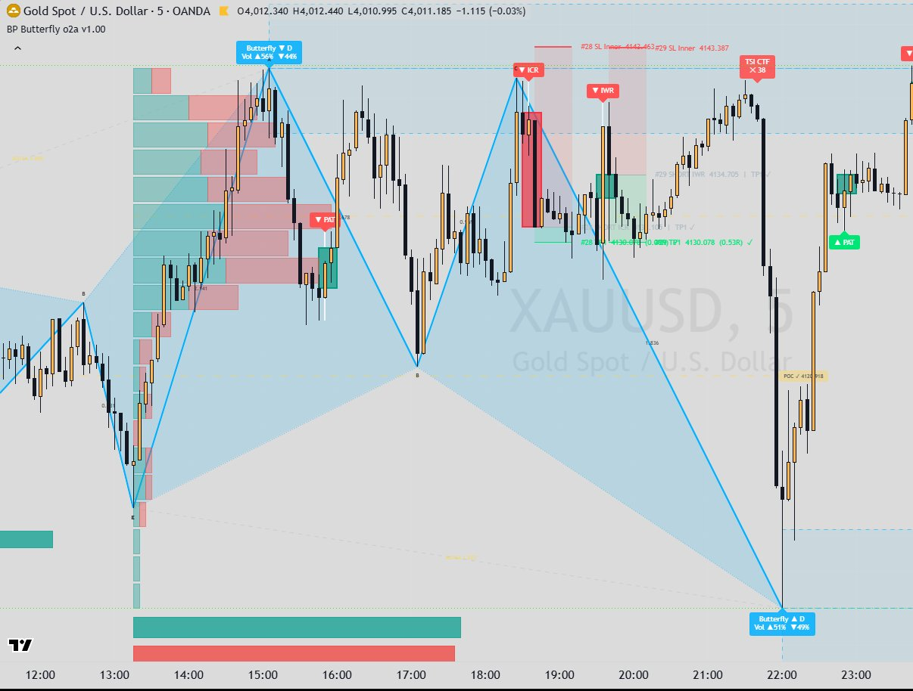

Indicators / Butterfly
Harmonic patternButterfly v1.00
Detects the five-point Butterfly harmonic pattern (X-A-B-C-D) on higher-timeframe candles that the script builds itself, and draws it on your chart. At point D it draws a Potential Reversal Zone (PRZ) split into an inner and an outer box, and fires signals when price rejects or breaks those boxes, plus optional TSI and RSI signals inside the zone. Each signal can open a tracked position with one target (TP1) and a stop, and tables summarise the signals and the last pattern's data.

What it draws
- Pattern legs X-A, A-B, B-C, C-D (solid), dotted X-B and B-D projections, dashed X-D line, and shaded 'wings' (triangles XAB and BCD)
- Point labels X, A, B, C and ratio badges on each leg (AB/XA, BC/AB, CD/BC, AD/XA)
- Inner and outer PRZ boxes at point D that keep extending right until mitigated
- Live forming pattern preview while the last leg develops
- Signal labels: PAT, IWR, ICR, OWR, OCR, B&R, TSI and RSI (HTF and chart-TF)
- The higher-timeframe signal candle drawn over its chart bars (Standard, Heikin Ashi or Momentum Heikin Ashi) with signal tags; optional small chart-TF markers
- Positions: entry, TP1 and SL lines with optional risk/reward zones (closed positions kept on chart: 20)
- Pattern volume profile built at confirmation: price bins, POC line (fades after a wick touches it), buy/sell bars and % labels
- Statistics table (one row per enabled signal: signals, trades, Win % = TP1 hit, SL %) and Pattern Data table for the last confirmed pattern (point times, volume / relative volume, leg sizes, ratios, durations, PRZ edges, volume-profile POC / VAH / VAL)
Signals
- PAT (Pattern Formed)
- Fires on the HTF candle where a Butterfly is confirmed, i.e. the D pivot is locked by the Pivot Confirmation bars. Rules (each band widened by the Fibonacci Error Tolerance %): AB = 0.75-0.82 of XA, BC = 0.382-0.886 of AB, CD = 1.618-2.618 of BC, AD = 1.272-1.618 of XA; XA and CD legs each at least 0.8 x HTF ATR(14); X to D length within the min/max HTF bars. Long when D is a low (bullish pattern), short when D is a high.
- IWR (Inner Wick Rejection)
- Bullish example (bearish mirrored): price first clears above the inner box, then an HTF candle wicks back into it with its low staying at or above D, and closes back above the inner box. Long.
- ICR (Inner Close Rejection)
- Bullish example: price clears above the inner box, an HTF candle then closes inside it, and a later HTF candle closes back above it, with D never broken. Long.
- OWR (Outer Wick Rejection)
- Bullish example: while the outer box is not mitigated, an HTF candle wicks below D into the outer box (a sweep) and closes back above D. Long.
- OCR (Outer Close Rejection)
- Bullish example: while the outer box is not mitigated, an HTF candle closes below D inside the outer box, and a later HTF candle closes back above D. Long.
- B&R (Outer Break & Retest)
- Pattern failure, opposite direction. Bullish-pattern example: price breaks below the outer box bottom (on a close by default, or a wick), then a later HTF candle retests that edge from below and closes back below it. Short. Cancelled if price closes back beyond D first. Fires once per pattern.
- TSI Cross (HTF / CTF)
- Inside the live part of the selected PRZ box of a confirmed pattern (candle touches it by default): the TSI line (13 / 7, signal 7) crosses up through its signal line while TSI is at or below the oversold level (HTF -25, CTF -30) for a long on a bullish pattern, or crosses down while at or above overbought (HTF 25, CTF 30) for a short on a bearish pattern. HTF signals use the closed HTF candle and can open positions; CTF signals use the closed chart candle and are labels only. Once per pattern per timeframe by default.
- RSI Bands (HTF / CTF)
- Inside the live PRZ box: long when RSI(14) is at or below Over Sold (19.9), or in the Support band (above 19.9 and at or below 34.9) with a strong bullish candle (body at least 1.2 x the average body of the last 20 candles). Short mirrored with Over Buy 79.9 and Resist 67.9. HTF opens positions, CTF is labels only.
Main settings
| Setting | Default | What it does |
|---|---|---|
| Pattern Timeframe | 15 | The whole engine runs on candles of this timeframe (built inside the script); must be at or above the chart timeframe. |
| Swing Period (HTF bars) | 10 | Left-side lookback a swing pivot must beat. |
| Pivot Confirmation (HTF bars) | 3 | HTF bars to the right needed to confirm a pivot (the pattern is confirmed this many bars after D). |
| Direction | Long and Short | Only long, only short, or both. |
| Fibonacci Error Tolerance % | 10 | Widens every ratio band; also sizes the Auto PRZ. |
| Minimum XA / CD Leg Size (x HTF ATR 14) | 0.8 | Skips patterns with legs that are too small. |
| Zone Size | Auto (Original) | PRZ height: Auto = 2 x max(last leg x tolerance, HTF ATR x 0.7), or ATR multiple (1.4), % of last leg (20), fixed price (2.0). Inner and outer boxes each take 50% of it, mitigated by wick. |
| Max Rejection Signals per Type per Pattern / Signal Window | 1 / 0 (no limit) | How many IWR/ICR/OWR/OCR signals a pattern can give, and for how many HTF bars. |
| TP1 Mode | Pattern (0.382 retracement of AD, from D) | Single target: the pattern TP1 or an R multiple (R = |entry - SL|, default 1.0). B&R always uses the R multiple. |
| Stop Loss anchors (per signal group) | PAT: Outer Far Edge; IWR/ICR: D; OWR/OCR: Outer Far Edge; B&R: Signal Candle H/L; TSI/RSI: Outer Far Edge; each + 0.2 x HTF ATR | Where the stop of each position goes; a signal whose stop would sit on the wrong side of entry is skipped. |
Timeframes
Pattern Timeframe input (default 15 minutes); HTF candles are aggregated inside the script from chart bars (no request.security). If it is set below the chart timeframe, the chart timeframe is used. Everything is drawn on the chart timeframe. TSI and RSI signals run on both the pattern timeframe (HTF) and the chart timeframe (CTF).
Alerts
Pine: none (the source header states all alerts were removed in v1.00). MT5: no alerts; the port exposes signal buffers (SigLong / SigShort, a bitmask of the signals fired on each bar).
Closed candles and repainting
- HTF candles are built inside the script; a completed HTF candle is processed on the chart bar that closes it (closed-bar check), or on the first chart bar of the next HTF candle.
- Swing pivots need Pivot Confirmation HTF bars to the right, so a pattern (and PAT) appears that many HTF bars after point D.
- PRZ, rejection and HTF TSI/RSI signals use closed HTF candles; CTF TSI/RSI signals use closed chart bars only.
- The 'Live Forming Pattern' preview includes the still-forming HTF candle and changes until it closes (by design).
- Positions are the indicator's own statistics, not trades: one per signal, opened at the signal candle's close; TP1/SL checked on closed HTF candles (or every chart bar if Tracking = Chart Bars); if TP1 and SL are touched in the same candle it counts as SL.
On MetaTrader 5
- MT5 defaults are the author's live chart settings: Pattern Timeframe M5, Swing Period 6, Pivot Confirmation 2, Zone Size ATR x 1.4, TP1 Mode R multiple at 2R, Bullish/Bearish colour palette.
- MT5-only: mid price option (bid + half spread) because TradingView plots mid prices and MT5 bars are bid; server-clock setting (winter/summer offsets) for the Pattern Data table times.
- MT5-only: automatic contrast for black charts and an automatic table theme; transparency emulated by blending with the background and overlapping fills drawn on one canvas.
- MT5-only: verification CSV dump (one row per pattern, signal and position) and signal buffers for EAs.
- MT5 limits handled: object text capped at 63 characters (long text is split). After a recompile the indicator reloads only on the next tick (switch timeframe at the weekend).
- README check against TradingView (XAUUSD M1, pattern timeframe 5): last pattern's points, times and volume profile identical; differences traced to broker price feed (e.g. a Sunday-open spike moved a pivot).